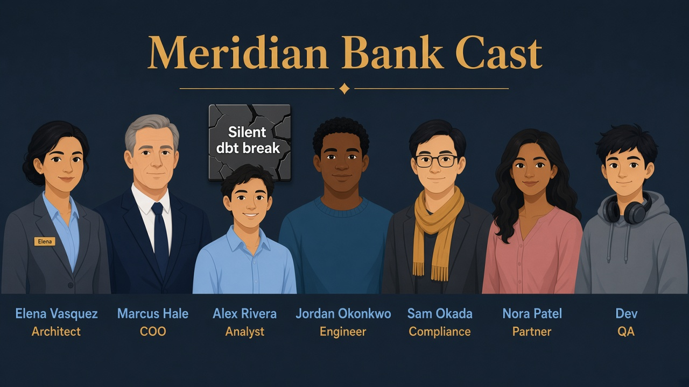
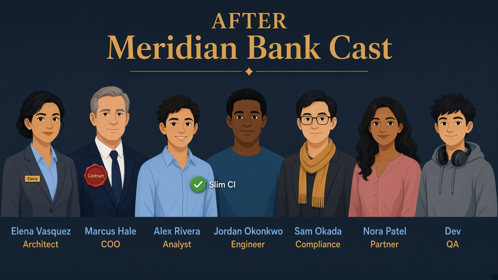
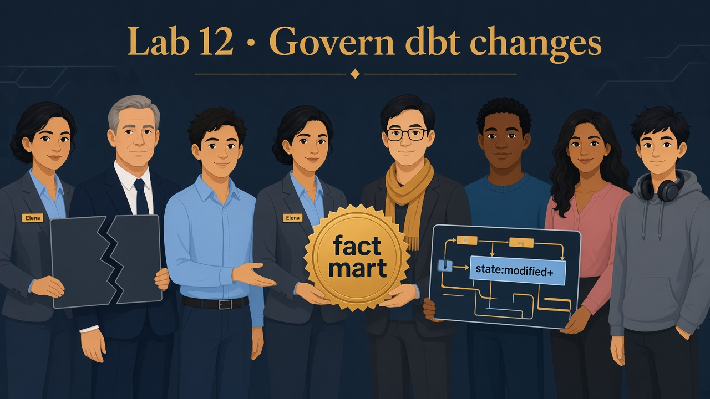

Lab 12 · Sunday · You are Elena · Alex’s broken metric
Silent dbt changes broke the board deck
Read the Teach first sections before you edit YAML.
Lab 02 proved incremental merge — this lab governs what Alex’s dashboards may depend on: declared sources, enforced contracts on published marts, and Slim CI so pull requests do not rebuild all of Meridian.
Business problem
A column rename in the txn mart shipped without notice. Alex’s Looker tile went blank before the board meeting. Marcus: “Govern the published marts.”
Solution you will design
Declare BRONZE_LANDING.TXN_EVENTS in sources, enforce a contract on fct_orders_incremental, and describe Slim CI with state:modified+ and --defer against a saved production manifest.

Before
Silent dbt break — board tile blank.

After
Contract + Slim CI — fail before prod.
Sunday planning
Jordan owns git; Elena owns what may break Alex — contracts on published marts, not every staging view.
Refresh Lab 02 if watermark / incremental is fuzzy — this lab builds on that fact table.
See it — don’t memorize definitions
Govern what Alex’s dashboards depend on — not every staging view.
Source
YAML dock address
Declares Jordan’s table — lineage in git.
{{ source('bronze_landing', 'txn_events') }} not hard-coded BRONZE_LANDING.*
Contract
Published mart promise
Column names + types enforced on build.
rename order_total ✗ dbt fails before Looker
Slim CI
PR builds less
Only changed models + downstream.
state:modified+ --defer to prod manifest
Saved state
prod_artifact/manifest.json
Yesterday’s prod graph — compare in CI.
skip full bank rebuild borrow prod parents
Source (YAML)TXN_EVENTSJordan lands rows · dbt declares dock
Staging viewstg_ordersrename columns · no contract required
Published martfct_orders_incrementalcontract enforced · Alex’s tile

Picture · Contract the mart
silent dbt breaks Alex’s tile; contracts + Slim CI.
Where contracts belong (and where they don’t)
stg_orders is an internal translator — Elena does not contract it.
fct_orders_incremental is what Alex and Looker treat as stable — that gets contract.enforced: true and explicit data_type on each column.
Classic mistake
Enforcing contracts on every staging view slows the team without protecting consumers. Contract the published boundary.
1
Sources file — header and BRONZE_LANDING database
What this does
version: 2 tells dbt this is modern YAML schema. The sources: list begins the BRONZE_LANDING dock definition.
Why Elena does it
Without a source entry, dbt can still query via raw SQL — but lineage breaks and renames hide from the graph.
data_type: number must match Snowflake. tests: [unique, not_null] keeps the txn key trustworthy — same as Lab 02’s merge key.
YAML · schema.yml (part 2)
columns:
- name: order_id
data_type: number
tests: [unique, not_null]
- name: customer_id
data_type: number
5
Contract — status, order_total, updated_at
Why list every published column
Contract mode requires the YAML to be complete. updated_at is the watermark column — if its type drifts, incremental logic and Alex’s “last refresh” both break.
YAML · schema.yml (part 3)
- name: status
data_type: varchar
- name: order_total
data_type: number
- name: updated_at
data_type: timestamp_ntz
tests: [not_null]
✓ After edits: dbt run --select fct_orders_incremental should pass or fail loudly on mismatch
6
Slim CI — install packages
What this does
dbt deps pulls package dependencies (if any) before CI compiles the graph — same as local dev.
Shell · step 1
cd dbt_project
dbt deps
7
Slim CI — list what would run
What this does
dbt ls --select state:modified+ prints model names that differ from prod_artifact/manifest.json, plus downstream. No Snowflake build yet — cheap sanity check for Jordan’s PR.
What you should see
On a small change to stg_orders, both staging and fct_orders_incremental appear — downstream of the edit.
Shell · step 2
dbt ls --select state:modified+ --resource-type model --state ./prod_artifact/
8
Slim CI — build with defer
What this does
dbt build runs models and tests for the selected slice. --defer reads unchanged parents from prod relations named in the manifest — so CI does not rebuild the entire Meridian graph on every PR.
CI prerequisite
Your pipeline must upload manifest.json from prod into prod_artifact/ each deploy. Without it, state: selectors have nothing to compare.
Interviewer presses further — say these out loud
Basics got you into the room. Cover each answer before you open it.
If you blank here, an Architect + dbt interviewer will know.
Q1. Why contract fct_orders_incremental but not every stg_ model?
Say: Staging is an internal translator; published marts are Alex/Looker’s API. Contracting every stage slows the team without protecting consumers. Contract the boundary where silent rename becomes a NULL board tile.
Q2. Contract enforced — what still breaks Alex?
Say: Semantic drift: same column name/type, wrong grain or business meaning; or updated_at “ok” but source stops updating it. Contracts catch schema breaks; tests and ownership catch meaning breaks.
Q3. Slim CI state:modified+ with --defer — failure if manifest is stale?
Say: You defer to yesterday’s prod graph and miss broken upstream changes, or under-build and ship green CI that fails in prod. Manifest freshness is part of the pipeline contract — not an optional flag.
Q4. When do you refuse Slim CI and run a fuller build?
Say: Cross-cutting macro changes, shared staging refactors, or release trains where modified+ is known-blind. Slim CI is PR cost control; release gates can still full-build critical marts.
Q5. How do contracts interact with Lab 02 incremental?
Say: If updated_at or order_id type drifts, incremental MERGE and Alex’s “last refresh” both break — contract makes that a CI failure. The watermark column belongs in enforced YAML, not a wiki comment.
Elena’s wrap-up (say this out loud)
“Meridian’s mart broke because nobody enforced the published schema. I declared BRONZE_LANDING.TXN_EVENTS as a dbt source, enforced a contract on fct_orders_incremental, and described Slim CI so PRs only build state:modified+ with defer to prod manifest.
Outcome: Alex’s dashboards get stable columns; Jordan’s team ships faster without full-graph builds every time.”